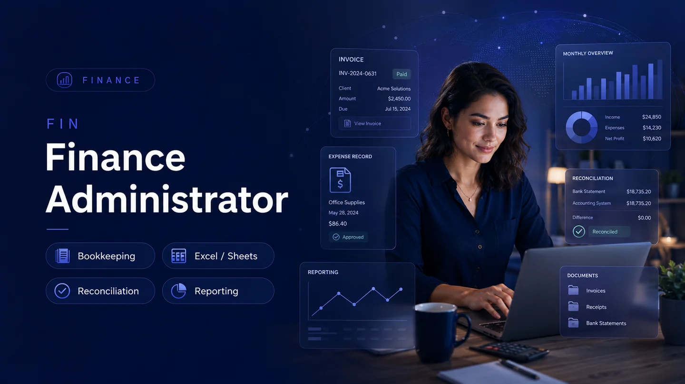
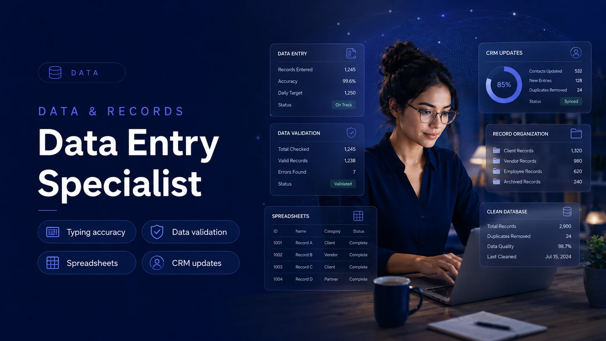

Research & Workforce Intelligence
We analyze labor-market trends, employer needs, emerging industries, and remote-work patterns to identify meaningful opportunities and future career pathways.
Brownstone Careers connects exceptional talent with high-quality remote opportunities through workforce intelligence, industry research, professional recruitment, and future-focused career development.
We combine research, recruitment, learning, and emerging technology insights to help people secure meaningful careers today and build the skills and entrepreneurial mindset needed for tomorrow.
We analyze labor-market trends, employer needs, emerging industries, and remote-work patterns to identify meaningful opportunities and future career pathways.
We connect qualified professionals with high-quality remote roles through a structured, transparent, and candidate-focused recruitment process.
We support continuous learning, practical skill development, professional readiness, and long-term advancement beyond a single placement.
We provide education and insights across artificial intelligence, blockchain, digital finance, automation, and business innovation.
Start with the role that best matches your background, then submit a focused application with specific examples.

Support invoicing, reconciliation, expense records, reporting, document control, and confidential finance administration with accuracy and discretion.

Enter, verify, clean, organize, and update business information so remote teams can rely on accurate records and consistent data quality.

Deliver professional email, chat, helpdesk, or phone support through clear communication, issue tracking, documentation, and respectful follow-through.

Coordinate schedules, inboxes, documents, files, task lists, and operational follow-up so remote teams stay organized and productive.

Support busy professionals and teams with remote coordination, online research, inbox assistance, appointment management, and task follow-through.

Assist recruitment teams with candidate records, interview scheduling, applicant communication, screening notes, and hiring pipeline organization.
Brownstone Careers is structured around the tools candidates and remote teams commonly use for communication, documents, interviews, spreadsheets, collaboration, and professional visibility.
 Microsoft 365
Microsoft 365
 Google Workspace
Google Workspace
 WhatsApp
WhatsApp
 LinkedIn
LinkedIn
 Slack
Slack
 Zoom
Zoom
 Indeed
Indeed
 Notion
Microsoft 365
Google Workspace
WhatsApp
LinkedIn
Slack
Zoom
Indeed
Notion
Notion
Microsoft 365
Google Workspace
WhatsApp
LinkedIn
Slack
Zoom
Indeed
Notion
Every section now guides visitors through role discovery, fit checks, preparation, application, safety, and official support. The goal is to make the website feel rich, trustworthy, and built for serious remote-work candidates.
Submit your details, preferred role, availability, resume, and professional summary.
Answer structured questions about experience, work style, technology, reliability, and goals.
Complete a role-relevant exercise such as typing, accuracy, customer response, admin organization, or finance review.
Selected candidates discuss qualifications, communication style, expectations, and remote-work readiness.
Information, equipment, references, and eligibility may be checked where applicable.
Successful candidates receive agreement, confidentiality, orientation, and role onboarding documents.
Brownstone Careers looks for candidates who communicate well, follow instructions, protect confidential information, and can operate responsibly in remote environments.
Choose your role, describe your experience, and attach your resume for review.